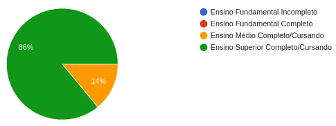
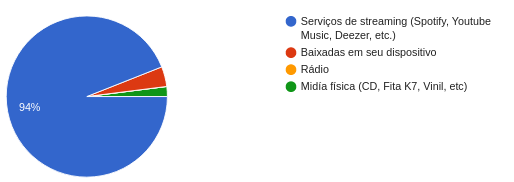
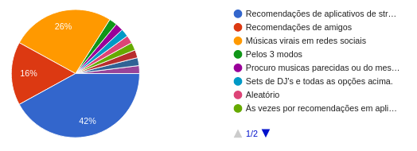
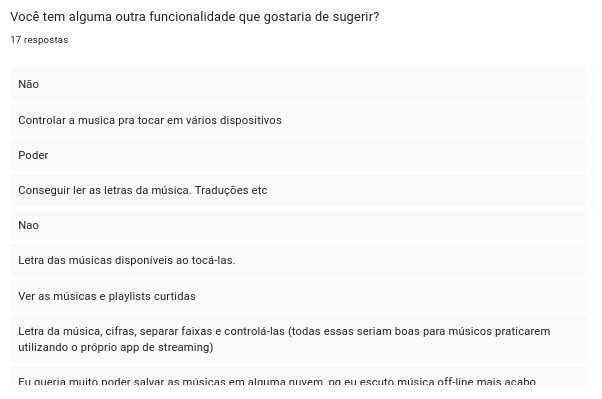

Questionário
Introdução
O questionário é uma das principais técnicas tradicionais de elicitação de requisitos, utilizado quando já existe um conhecimento prévio sobre o domínio de negócio a ser abordado e um grande número de usuários, além também de possibilitar análises a partir de estatísticas, apesar de ter uma desvantagem que é a limitação do universo de respostas e pouca interação entre a equipe e os usuário. O questionário é documento estruturado em questões abertas e fechadas, para assim coletar informações organizadas e quantificáveis, o que auxilia na interpretação dos dados obtidos. E como foi dito no começo, o questionário permite que um grande número de usuários consigam responder de forma eficiente.
Metodologia
A equipe realizou a elaboração de um questionário online através do serviço google forms¹ no dia 05/04/2024, no qual o foco é avaliação dos perfis de usuários que utilizam aplicativos de música. O questionário foi estruturado com 8 perguntas, sendo algumas para conhecer o perfil dos usuários e o restante acerca da experiência e necessidades dos usuários. O questionário foi divulgado em grupo diversos, sendo um deles a comunidade acadêmica da UnB - FGA, através de aplicativos de mensagem WhatsApp e Telegram, entre o período de 05 a 07 de abril de 2024.
Perguntas Realizadas
A tabela 1 contém a seleção das perguntas utilizadas no questionário.
Tabela 1 - Perguntas do questionário
| ID | Pergunta |
|---|---|
| 1 | Qual a sua idade? |
| 2 | Qual o seu grau de escolaridade? |
| 3 | Qual gênero você se identifica? |
| 4 | Quais seus gostos musicais? |
| 5 | Como você mais consome música? |
| 6 | Como você descobre novas músicas? |
| 7 | O que você espera de um aplicativo de música? |
| 8 | Você tem alguma outra funcionalidade que gostaria de sugerir? |
Fonte: Formulário feito pelo grupo 2, 2024.
Resultado do questionário
O resultado do questionário teve o total de 50 respostas de acordo com o Google-forms. O resultado das respostas serão apresentadas de forma gráfica nas figuras de 1 a 8.
Questão 1 - Qual a sua idade?
De acordo com o gráfico apresentado na figura 1 que representa a idade dos usuários, os resultados ficaram: - 40 usuários possuem idade de 19 a 24 anos - 6 usuários possuem idade de 25 a 34 anos - 3 usuários possuem até 18 anos idade - 1 usuário possui 61 ou mais anos de idade
Figura 1 - Pergunta 1.

Fonte: Formulário feito pelo grupo 2, 2024.
Questão 2 - Qual a sua escolaridade?
De acordo com o gráfico apresentado na figura 2 que representa o grau de escolaridade dos usuário, os resultados foram: - 43 usuários possuem o ensino superior completo ou ainda estão cursando - 7 usuários possuem o ensino médio completo ou ainda estão cursando
Figura 2 - Pergunta 2.
 Fonte: Formulário feito pelo grupo 2, 2024.
Questão 3 - Qual gênero você se identifica?
A quantidade de usuários que se identificam do gênero feminino são 25 usuários, 24 usuários se identificam com o gênero masculino 1 prefere não dizer.
Figura 3 - Pergunta 3.

Fonte: Formulário feito pelo grupo 2, 2024.
Questão 4 - Quais seus gostos musicais?
De acordo com a figura 4, o gênero musical mais votado é o Pop com 38 usuários.
Figura 4 - Pergunta 4.

Fonte: Formulário feito pelo grupo 2, 2024.
Questão 5 - Como você mais consome música no dia a dia?
Analisando a figura 5, a maioria dos usuários consomem música por aplicativos de streaming de música, e o meio menos utilizado é o de mídia física.
Figura 5 - Pergunta 5

Fonte: Formulário feito pelo grupo 2, 2024.
Questão 6 - Como você descobre novas músicas?
De acordo com a figura 6, a maioria dos usuários (21 pessoas) descobrem músicas novas a partir de recomendações automáticas de aplicativos de música.
Figura 6 - Pergunta 6

Fonte: Formulário feito pelo grupo 2, 2024.
Questão 7 - O que você espera de um aplicativo de streaming de música?
De acordo com a figura 7, as funcionalidades que os usuários mais esperam de um aplicativo de música são (mais da metade dos usuários (25) responderam como muito relevante) - Ouvir música, 46 usuários julgaram como muito relevante. - Conseguir ouvir música offline, 44 usuários julgaram como muito relevante. - Pesquisar músicas/artistas/playlist's/álbuns, 37 usuários julgaram como muito relevante. - Montar playlist's, 33 usuários julgaram como muito relevante. - Montar uma fila de reprodução, 27 usuários julgaram como muito relevante.
Figura 7 - Pergunta 7

Fonte: Formulário feito pelo grupo 2, 2024.
Questão 8 - Você tem alguma outra funcionalidade que gostaria de sugerir?
Analisando a figura 8, 12 usuários sugeriram outras funcionalidades além do que o formulário já cobria, que foram:
- Controlar a musica pra tocar em vários dispositivos;
- Conseguir ler as letras da música. Traduções etc;
- Letra das músicas disponíveis ao tocá-las;
- Ver as músicas e playlists curtidas;
- Letra da música, cifras, separar faixas e controlá-las (todas essas seriam boas para músicos praticarem utilizando o próprio app de streaming);
- Eu queria muito poder salvar as músicas em alguma nuvem, pq eu escuto música off-line mais acabo baixando no meu celular e isso é muito ruim;
- Monetização de reprodução de plays nas músicas para os artistas envolvidos na composição destas.Upload de sets;
- algoritmo que cria playlists pra você ouvir conforme “estado de espírito” de acordo com seus próprios gostos, por ex: “lavar a casa”, “tô triste”, “tô indo dormir” etc, personalizado individualmente e tal, seria top;
- Escutar música com outras pessoas através do app;
- Possibilidade de ver a letra da música (se possível com tradução), compartilhar músicas, fazer buscas pela letra da música;
- Chat de texto para poder recomendar músicas para amigos;
- playlist de download automática pelas mais ouvidas, com opção de quantas musicas quer “playlist offline”;
Figura 8 - Pergunta 8

Fonte: Formulário feito pelo grupo 2, 2024.
Definição do Perfil de Usuário
Após a análise dos resultados obtidos identificamos o seguinte perfil para os usuários de aplicativos de música:
- Idade: Entre 19 e 25 anos
- Gênero: Um empate entre o público masculino e feminino.
- Grau de escolaridade: Finalizaram ou ainda estão cursando no ensino superior.
- Experiência: A maior utiliza aplicativos de música para ouvir/descobrir músicas.
- Tarefas primárias: Ouvir música online e offline.
Referência bibliográfica
Google LLC. Google Forms. Disponível em: https://www.google.com/intl/pt-BR/forms/about/. Acesso em: 05/04/2024.
Bibliografia
Ferreira, Daniel. Métodos e Técnicas de Elicitação de Requisitos e sua Aderência ao CMMi. Pernambuco, Universidade Federal de Pernambuco, 2012. Acesso em: 07/04/2024.
BARBOSA, S. D. J.; SILVA, B. S. Interação Humano-Computador. Rio de Janeiro: Elsevier, 2011. Acesso em: 07/04/2024.
Histórico de versões
| Versão | Data | Descrição | Autor(es) | Revisor(es) |
|---|---|---|---|---|
| 1.0 | 07/04/2024 | Criação do documento questionário | Vinícius Mendes | João Vítor |